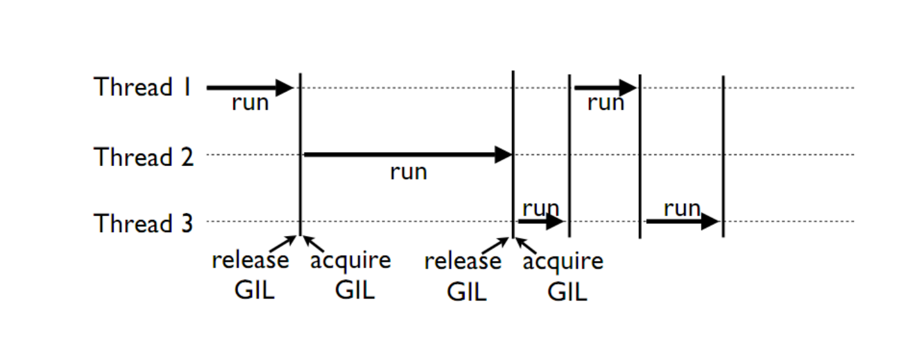

Concurrent Programming¶
What does it mean to do something “Concurrently” ? It means multiple things are happening at the same time. But what are those “things”?
- Parallelism is about processing multiple things at the same time – true parallelism requires multiple processors (or cores).
- Concurrency is about handling multiple things at the same time – which may or may not be actually running in the processor at the same time (like network requests for instance).
- Parallelism needs concurrency, but concurrency need not be in parallel.
Whirlwind Tour of Concurrency¶
Concurrency:
Having different code running at the same time, or kind of the same time.
Asynchrony:
The occurrence of events independent of the main program flow and ways to deal with such events.
Asynchrony and Concurrency are really two different things – you can do either one without the other – but they are closely related, and often used together. They solve different problems, but the problems and the solutions overlap.
“Concurrency is not parallelism” – Rob Pike: https://vimeo.com/49718712
Despite Rob Pike using an example about burning books, I recommend listening to at least the first half of his talk.
In that talk Rob Pike makes a key point: Breaking down tasks into concurrent subtasks only allows parallelism, it’s the scheduling of these subtasks that creates it.
And, indeed, once you have a set of subtasks, they can be scheduled in a truly parallel fashion, or managed asynchronously in a single thread (concurrent, but not parallel)
Types of Concurrency¶
Multithreading:
Multiple code paths sharing memory – one Python interpreter, one set of Python objects.
Multiprocessing:
Multiple code paths with separate memory space – completely separate Python interpreter.
Asyncronous programming:
Multiple “jobs” run at “arbitrary” times – but usually in one thread – i.e. only one code path, one interpreter.
Lots of different packages for both in the standard library and 3rd party libraries.
How to know what to choose?
- IO bound vs. CPU bound – CPU bound requires multiprocessing (at least with pure Python)
- Event driven cooperative multitasking vs. preemptive multitasking
- Callbacks vs coroutines + scheduler/event loop
Motivations for parallel execution¶
- Performance
- Limited by “Amdahl’s Law”: http://en.wikipedia.org/wiki/Amdahl%27s_law
- CPUs aren’t getting much faster
- Event handling
- If a system handles asynchronous events, a separate thread of execution could handle those events and let other threads do other work
- Examples:
- Network applications
- User interfaces
Parallel programming can be hard!
If your problem can be solved sequentially, consider the costs and benefits before going parallel.
Parallelization Strategy for Performance¶

- Not every problem is parallelizable
- There is an optimal number of threads for each problem in each environment, so make it tunable
- Working concurrently opens up synchronization issues
- Methods for synchronizing threads:
- locks
- queues
- signaling/messaging mechanisms
Concurrency in the standard library:¶
threading: processing is interleaved to get more done (doing dishes while taking a break from cooking)
sched: Scheduler, safe in multi-threaded environmentsqueue: The queue module implements multi-producer, multi-consumer queues. It is especially useful in threaded programming when information must be exchanged safely between multiple threads.multiprocessing: processing is parallel (someone else does the dishes while you cook). Duplicates the current Python process and runs code in it. Follows a similar API to threading.subprocess: allows you to spawn new processes (entirely different programs), connect to their input/output/error pipes, and obtain their return codes. Parallel, hands to OS (usually running command line programs)concurrent.futures: https://www.blog.pythonlibrary.org/2016/08/03/python-3-concurrency-the-concurrent-futures-module/ This has mostly been superseded by theasynciopackage.
asyncio: an asynchronous event loop, designed primarily for IO (networked) applications.
Concurrency Outside the Standard Library¶
Async Web Frameworks¶
These are Frameworks for making web APIs with an asynchronous approach. They pre-date the built in asyncio package, and the latest language syntax.
- Twisted
- Tornado
Job Schedulers¶
These are for scheduling jobs (not only Python jobs) on larger Multiprocessing and multi-machine systems – think the cloud.
- Celery + Rabbitmq
- Redis + RQ
Threads versus processes in Python¶
Threads are lightweight processes, run in the address space of an OS process, true OS level threads.
Therefore, a component of a process.
This allows multiple threads access to data in the same scope.
Threads can not gain the performance advantage of multiple processors due to the Global Interpreter Lock (GIL)
But the GIL is released during IO, allowing IO bound processes to benefit from threading
Processes¶
A process contains all the instructions and data required to execute independently, so processes do not share data!
Mulitple processes best to speed up CPU bound operations.
The Python interpreter isn’t lightweight!
Communication between processes can be achieved via:
multiprocessing.Queue
multiprocessing.Pipe
and regular IPC (inter-process communication)
Data moved between processes must be pickleable
Advantages / Disadvantages of Threads¶
Advantages:¶
They share memory space:
- Threads are relatively lightweight – shared memory means they can be created fairly quickly without much memory use.
- Easy and cheap to pass data around (you are only passing a reference).
Disadvantages:¶
They share memory space:
Each thread is working with the same python objects.
Operations often take several steps and may be interrupted mid-stream
Thus, access to shared data is also non-deterministic
(race conditions)
Creating threads is easy, but programming with threads is difficult.
Q: Why did the multithreaded chicken cross the road?
A: to To other side. get the
—Jason Whittington
GIL¶
Global Interpreter Lock
(GIL)
This is a lock which must be obtained by each thread before it can execute, ensuring thread safety
{kind=link}
The GIL is released during IO operations, so threads which spend time waiting on network or disk access can enjoy performance gains
The GIL is not unlike multitasking in humans, some things can truly be done in parallel, others have to be done by time slicing.
Note that potentially blocking or long-running operations, such as I/O, image processing, and NumPy number crunching, happen outside the GIL. Therefore it is only in multithreaded programs that spend a lot of time inside the GIL, interpreting CPython bytecode, that the GIL becomes a bottleneck. But: it can still cause performance degradation.
Not only will threads not help cpu-bound problems, but it can actually make things worse, especially on multi-core machines!
Python threads do not work well for computationally intensive work.
Python threads work well if the threads are spending time waiting for something:
- Database Access
- Network Access
- File I/O
Some alternative Python implementations such as Jython and IronPython have no GIL
cPython and PyPy have one
More about the gil
More on the GIL:
https://emptysqua.re/blog/grok-the-gil-fast-thread-safe-python/
If you really want to understand the GIL – and get blown away – watch this one:
http://pyvideo.org/pycon-us-2010/pycon-2010–understanding-the-python-gil—82.html
- http://wiki.python.org/moin/GlobalInterpreterLock
- https://docs.python.org/3/c-api/init.html#threads
- http://hg.python.org/cpython/file/05e8dde3229c/Python/pystate.c#l761
NOTE: The GIL seems like such an obvious limitation that you’ve got to wonder why it’s there. And there have been multiple efforts to remove it. But it turns out that Python’s design makes that very hard (impossible?) without severely reducing performance on single threaded programs.
The current “Best” effort is Larry Hastings’ gilectomy
But that may be stalled out at this point, too. No one should count on it going away in cPython.
But: Personal Opinion: Python is not really (directly) suited to the kind of computationally intensive work that the GIL really hampers. And extension modules (i.e. numpy) can release the GIL!
Posted without comment¶

Advantages / Disadvantages of Processes¶
Processes are heavier weight – each process makes a copy of the entire interpreter (Mostly…) – uses more resources.
You need to copy the data you need back and forth between processes.
Slower to start, slower to use, more memory.
But as the entire python process is copied, each subprocess is working with the different objects – they can’t step on each other. So there is:
no GIL
Multiprocessing is suitable for computationally intensive work.
Works best for “large” problems with not much data to pass back and forth, as that’s what’s expensive.
Note that there are ways to share memory between processes, if you have a lot of read-only data that needs to be used. (see Memory Maps)
The mechanics: how do you use threads and/or processes¶
Python provides the threading and multiprocessing modules to facility concurrency.
They have similar APIs – so you can use them in similar ways.
Key points:
- There is no Python thread scheduler, it is up to the host OS. yes these are “true” threads.
- Works well for I/O bound problems, can use literally thousands of threads
- Limit CPU-bound processing to C extensions (that release the GIL)
- Do not use for CPU bound problems, will go slower than no threads, especially on multiple cores!!! (see David Beazley’s talk referenced above)
Starting threads is relatively simple, but there are many potential issues.
We already talked about shared data, this can lead to a “race condition”.
- May produce slightly different results every run
- May just flake out mysteriously every once in a while
- May run fine when testing, but fail when run on: - a slower system - a heavily loaded system - a larger dataset
- Thus you must synchronize threads!
Synchronization options:
- Locks (Mutex: mutual exclusion, Rlock: reentrant lock)
- Semaphore
- BoundedSemaphore
- Event
- Condition
- Queues
Mutex locks (threading.Lock)¶
- Probably most common
- Only one thread can modify shared data at any given time
- Thread determines when unlocked
- Must put lock/unlock around critical code in ALL threads
- Difficult to manage
Easiest with context manager:
x = 0
x_lock = threading.Lock()
# Example critical section
with x_lock:
# statements using x
Only one lock per thread! (or risk mysterious deadlocks)
Or use RLock for code-based locking (locking function/method execution rather than data access)
Semaphores (threading.Semaphore)¶
- Counter-based synchronization primitive
- when acquire called, wait if count is zero, otherwise decrement
- when release called, increment count, signal any waiting threads
- Can be called in any order by any thread
- More tunable than locks
- Can limit number of threads performing certain operations
- Can signal between threads
Events (threading.Event)¶
- Threads can wait for particular event
- Setting an event unblocks all waiting threads
Common use: barriers, notification
Condition (threading.Condition)¶
- Combination of locking/signaling
- lock protects code that establishes a “condition” (e.g., data available)
- signal notifies threads that “condition” has changed
Common use: producer/consumer patterns
Queues (queue)¶
- Easier to use than many of above
- Do not need locks
- Has signaling
Common use: producer/consumer patterns
from Queue import Queue
data_q = Queue()
Producer thread:
for item in produce_items():
data_q.put(item)
Consumer thread:
while True:
item = q.get()
consume_item(item)
Scheduling (sched)¶
- Schedules based on time, either absolute or delay
- Low level, so has many of the traps of the threading synchronization primitives.
Timed events (threading.timer)¶
Run a function at some time in the future:
import threading
def called_once():
"""
this function is designed to be called once in the future
"""
print("I just got called! It's now: {}".format(time.asctime()))
# setting it up to be called
t = Timer(interval=3, function=called_once)
t.start()
# you can cancel it if you want:
t.cancel()
demo: Examples/condensed_concurrency/simple_timer.py
Race condition:¶
A “race condition” is when the code expects things to happen in a certain order.
But with threading, multiple threads can touch the same data, and they may not do it in the order the code expects.
trivial example in:
Examples/condensed_concurrenc
That also serves as an example of creating and using threads.
Subprocesses (subprocess)¶
Subprocesses are completely separate processes invoked from a master process (your python program).
Usually used to call non-python programs (shell commands). But of course, a Python program can be a command line program as well, so you can call either your or other python programs this way.
Easy invocation:
import subprocess
subprocess.run('ls')
The program halts while waiting for the subprocess to finish. (unless you call it from a thread!)
You can control communication with the subprocess via:
stdout, stdin, stderr with:
subprocess.Popen
Lots of options there!
Pipes and pickle and subprocess¶
- Very low level, for the brave of heart
- Can send just about any Python object
For this to work, you need to send messages, as each process runs its own independent Python interpreter.
Multiprocessing (multiprocessing)¶
- processes are completely isolated
- no locking :) (and no GIL!)
- instead of locking: messaging
Provides a similar API as threading – in the simple case, you can switch between them easily.
Messaging¶
Pipes (multiprocessing.Pipe)¶
- Returns a pair of connected objects
- Largely mimics Unix pipes, but higher level
- send pickled objects or buffers
Queues (multiprocessing.Queue)¶
- same interface as
queue.Queue- implemented on top of pipes
- means you can pretty easily port threaded programs using queues to multiprocessing - queue is the only shared data - data is all pickled and unpickled to pass between processes – significant overhead.
Other features of the multiprocessing package¶
- Pools
- Shared objects and arrays
- Synchronization primitives
- Managed objects
- Connections
Add references!